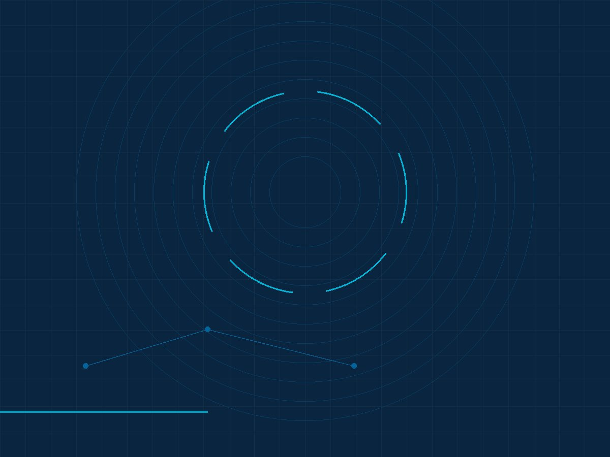

About HakimeRAD
HakimeRAD Teleradiology — a service of Hakimerad Medical Consultancy.
Responsibility and governance
Clinical responsibility is governed by Ethiopian law and medical ethics principles. Organisational responsibility is governed by the rules and regulations of the licence under which the entity is registered.
Dr. Dawit Muluneh Tadesse, MD
Founder & Managing Director. A practising radiologist and Assistant Professor of Radiology at Jigjiga University, where he has also led a hospital radiology department. He holds the RSNA Radiology Service Quality Improvement Associate Certification (2023), and he founded HakimeRAD after seeing, in daily practice, how many images go unread for want of a radiologist.
Why the service exists
The published workforce figures on this site describe the gap; they do not describe what it costs a facility. The service is built to read images a facility has already produced, at the moment it produces them, without that facility having to recruit a radiologist of its own.
Talk to the principal
Institutional enquiries are answered by the team, and clinical scope questions are answered by a radiologist. Start an enquiry, or call +251 906 373154.
Why we exist
Ethiopia trains and licenses a small number of radiologists for a very large population. The most recent published figure available to us puts that at roughly 350 qualified radiologists, or about one for every 350,000 people.1 The consequence is familiar to anyone running an imaging department: studies are acquired, then they wait.
HakimeRAD exists to close that specific gap. We do not build scanners and we do not run imaging departments. We read the images a facility already produces and return a structured report through a secure portal, so that the diagnostic capacity of an existing radiography room, CT or MRI suite is no longer limited by whether a radiologist is on site at that hour.
We work with institutions — public and private hospitals, clinics, diagnostic and imaging centres, regional health bureaux and NGOs that own imaging equipment. We do not accept individual patient cases, and we never ask for patient images, reports or identifiable patient information outside the reporting portal.

Mission and vision
Mission
To increase the diagnostic reporting capacity available to Ethiopian healthcare institutions by delivering remote interpretation and structured reporting that is timely, accountable and priced per institution.
Vision
A health system in which the quality of a radiology report does not depend on how far a facility is from a city, and in which every institution that owns imaging equipment can get it reported.
How we work
Five commitments that shape every engagement.
Institutions, not patients
Every engagement is with a facility. There are no patient appointments, and no clinical intake route through this website.
Targets, stated as targets
We publish turnaround as targets measured from upload, with the word target attached, and we do not describe any turnaround as guaranteed.
Availability confirmed, not assumed
Modality coverage, subspecialty reading and integration scope are confirmed against the reader bench and your requirements at enquiry.
No patient data outside the portal
Encryption in transit and at rest, role-based access, two-factor authentication and time-stamped audit logging are designed controls.
Quoted per institution
We do not publish a rate card, because modality mix, volume, urgency and coverage window decide the schedule and they differ by facility.
Where we are today
| Item | Position |
|---|---|
| Operating status | Pre-launch service. Availability and terms are confirmed at enquiry. |
| Delivery model | Remote reporting delivered as a medical-consultancy service, under the entity's commercial licence. |
| Modalities in scope | X-ray, CT, MRI, ultrasound, mammography, fluoroscopy and echocardiography. |
| Pilot partnerships | A small number of pilots are planned. None is signed, and no partner facility is named or implied anywhere on this site. |
| Registration details | Corporate registration and tax documentation are available to contracting institutions on request during due diligence. |
Questions we are asked about the company
The entity is Hakimerad Medical Consultancy. HakimeRAD Teleradiology is its teleradiology service line. Contracting, invoicing and due-diligence documentation are handled at entity level; the service line delivers the reporting.
We make no automated-diagnosis claim. Reports are produced by licensed reporting radiologists. Where software supports the workflow, it supports it — it does not read the study in place of the radiologist, and we do not market an AI capability that we have not deployed.
It is returned to your facility and archived in the portal. Critical findings are notified to your named clinician, and the time of notification is recorded. Retention is defined per agreement, typically 7–10 years.
Not yet, and we will not imply otherwise. Our pilot partnerships are at intent stage, and we do not publish client names, facility names or clinical results that we cannot substantiate.
Work with us
If your facility acquires imaging and waits for reports, we would like to hear how you work today.